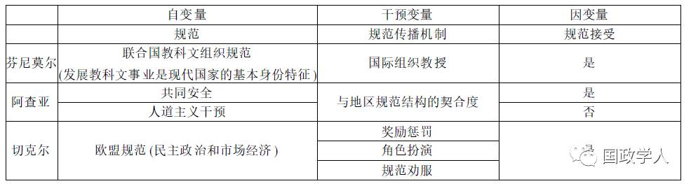

收录于合集

秦亚青
外交学院院长，教授、博士生导师；中国国际关系学会副会长，中华美国学会副会长，中国外交部外交政策咨询委员会委员，东亚思想库网络中国国家协调员，北京大学国际关系学院学术委员会委员，北京大学国际战略研究中心理事，复旦大学高级社会科学研究院学术委员会委员，《世界经济与政治》杂志编委，加拿大《全球治理》杂志编委。
在学术研究设计过程中，最重要的是思想创新，即怎样把创新思想置于一定的学术规范之内，通过工巧的设计，最终实现知识的再生产。在这一过程中，学术创新是目的，研究设计是手段。笔者以下就中国国际关系学界、尤其是青年学者和研究生普遍关注的几个有关研究设计与思想创新的问题及困惑谈谈自己的体会，并辅以三篇西方学者的学术论文，以期通过案例分析获得启迪。
一、 问题的提出
为什么中国国际关系学界在理论创新方面没有重大进展？若要回答这个问题，需要思考以下三点：
（一）什么是创新
一般来说，理论创新有两大类，一类是突破性理论创新，另一类是原创性理论创新。
突破性理论创新 是指在西方国际关系理论概念体系框架中的创新突破，即在原有理论基础上，通过批判甚至证伪原有理论的全部或是部分，取得创新性突破。比如，基欧汉的新自由制度主义就是在批判华尔兹的新现实主义理论基础上创新的，但两者都属于理性主义理论范畴。 在中国的语境中，当中国国际关系学界还未建构起一整套原生的概念体系时，借用西方理论的现有理论体系，运用生动的中国经验，就可能出现突破性创新。 费孝通借用西方社会学理论对中国江南乡村进行的田野调查研究发现了中国社会差序格局及其维持的社会秩序；中国新生代学者许田波(Victoria Tin-bor Hui)在《国际组织》(International Organization)杂志上发表了有关为何中国走向大一统、西方走向国家体系的学术论文①。在这篇文章中，作者就是运用西方理论对中国和西方经验进行了比较研究，这种创新就是突破性创新。
原创性理论创新 是在原有理论框架之外的创新，比如，依附理论就是依据发展中国家的现实和问题提出的与西方主流理论差异很大的理论体系。如果要形象地说明原创性理论的含义，那么交响乐《梁祝》就是一个很恰当的例子。《梁祝》使用的各种演奏乐器都来自于西方，但乐器只是它的表现形式，音乐所要表达的“魂”无疑是中国的。不仅在中国，《梁祝》在西方国家演奏时也引起了强烈的共鸣，引起共鸣的是升华到具有普世意义的中国元素。而 中国国际关系理论中的原创性，即是近年来中国国际关系学术界所提倡和期待的所谓“中国视角”、“中国学派”的生成。 原创性理论需要一个属于自我的灵魂。那么，中国的魂是什么？我以为，如果用最简单的词语总结， 可以说西方三百年来的思想灵魂是“理性(rationality)”；而中国传统文化的核心理念则是“关系性(relationality)”。 围绕“理性”产生了大量西方社会科学理论，围绕“关系性”是否也可以产生中国的社会科学理论呢？
（二）如何创新
学术创新体现在发现现有理论不能全部或部分解释的经验现象，并据此修正原有的理论假设或是提出新的理论假设。也就是说， 突破性创新的根本在于发现理论和经验之间的差异。 拉卡托斯提出，新的理论不仅能够解释原有理论所能解释的现象，而且能够解释原有理论不能解释的现象。这个要求是很高的，但创新至少意味着解释原有理论不能解释的经验现象。比如，结构现实主义是难以解释欧洲一体化进程的，但国际社会理论对这个问题的解释能力就要强得多。
原创性创新是更加困难的创新，因为它不仅要在理论与经验差异上发现问题，而且至少要在概念体系上具有创新的表现。 创新的根本在于发现差异，亦即概念和思维方式的差异，或者说文化的差异。到目前为止，国际关系理论的基本概念体系仍然是西方的，并且尤其以美国为主导。如果说地域文化是理论创新的重要源泉，那么差异就必然存在，非美国、非西方的国际关系理论必然会出现。这并不是说要替代西方国际关系理论，而是要将被压抑和被边缘化的国际关系思想挖掘出来，与西方国际关系理论共同成为国际关系理论思想世界的财富。否则，可能会进入“引进—模仿—再引进—再模仿”的无创新循环。
（三）中国国际关系理论的构建与创新
现在还没有中国国际关系理论。这里首先要澄清两个概念，即 学理性理论和战略或政策性理论 。前者是以学术为目的的知识导向型理论；后者是指作为行动指导原则的行动导向型理论。中国不乏后者，但鲜有前者。而以上讨论中的“理论”主要是指前一种意义上的学理性理论。
而关于中国学理性理论的创新问题，笔者在此借用一些概念进行说明。刘笑敢曾经发表文章提出哲学理论研究中的顺向格义和反向格义两个概念。②前者是指运用中国的理论框架和概念体系解释经验事实和社会意义；后者指运用西方的理论体系解释中国现象，即以西释中。我对此进行了一点修改，提出 正向格义（亦即刘笑敢的顺向格义）、反向格义和交互格义 的观点，其中交互格义是新提出的，具体应用于中国国际关系学界，即认为未来国际关系学界的理论创新将不是以纯正向格义或纯反向格义的方式，而是正向格义与反向格义相互交织、相互借重的方式实现的。
西方的理论概念体系已经比较完整，完全推翻是困难的；但中国文化中的一些思想是极有价值的，也需要加以挖掘和概念化，使之能够上升到抽象的层面，以便丰富现有的国际关系理论。所以， 中国国际关系理论的构建与创新可能要走一条“反向格义→交互格义→交互+正向格义”的道路。 在当前阶段，用中国的经验事实，发现西方国际关系理论无法解释的现象，是一个在创新方面大有可为的领域。
二、 研究设计中的误区
研究设计是为体现创新思想服务的。在进行研究设计的时候，的确存在一些误区， 致使出现为“设计而设计”，而不是“为思想而设计”的现象 ，其中两个主要的误区是：
（一）文献梳理越详尽越好
卡尔·波普尔(Karl Popper)反驳归纳主义的一个基本出发点就是，不可能穷尽所有的事实，所以证实方法从逻辑上是不合理的，从经验上是不可行的。在此基础上，他提出了证伪论。文献也是一样，在当今知识爆炸的时代，学术研究试图穷尽所有相关文献的做法在经验上既是不可能的，也是没有必要的。 合理的文献梳理应该注意三个问题：文献的针对性、相关性及学术性。 针对性是指所要收入的文献应是针对具体的研究问题本身的；相关性是指所选文献应与创新性研究设计密切联系；学术性则是指文献本身要有重要的学术意义，并且应有助于在该研究上做出某方面的突破。研究设计中的文献梳理工作应把握好以上三个标准，认为文献梳理越详尽越好的观点是片面的，也是没有一个人能够做到的。
文献梳理的核心在于质疑和批判，质疑和批判的目的在于发现现有理论文献与经验事实的差异。 当研究人员发现了经验事实与现有理论之间的不吻合现象时，他就有了创新的起点；如果这种发现用工巧的研究设计表现出来，他就可能生产出创新性研究成果。
（二）研究方法越复杂、越尖端越好
这种观点明显受到了技术霸权的影响。思想和技术是皮和毛的关系，思想之皮不存，技术之毛是不可能存在的。 技术永远是手段，是工具，是为研究思想和研究设计服务的。 实际上，思想的产生要比技术的获得困难得多，没有思想的技术是在空谈技术，没有任何实际意义。只有在思想创新的前提下，技术才能发挥锦上添花的作用。当然，这不是说不要方法，在中国国际关系学界，对方法的关注还远远不够。但是方法至上的想法不但难以创新，而且阻碍创新。
与之相关的一点就是，由于研究方法是为思想服务的，所以，研究方法的多元化是有助于创新的。在任何学术领域，认定只存在某种唯一正确的方法模式，学术也就死亡了。
三 、实例说明
对于中国国际关系学界而言，我们确实取得了重大的成就，但上述两类创新成果仍然是凤毛麟角，主要原因是创新意识不足和研究设计不能导向创新。在以上讨论的基础上， 本文将以“规范是怎样传播的”为研究问题，举出三个相关案例对思想创新与研究设计的关系和意义进行考察。 这一部分的基本观点是：创新的灵魂是思想，有了新的思想，加之工巧的设计才能实现理论创新。因此，所选三项研究成果都具备以下三个条件：学术创新、设计工巧和方法简单。我们可以看到，虽然这些研究在学术上有明显的创新，在设计上也很工巧，但方法本身并不复杂，就我们博士生现在的知识结构而言，都是可以做到的。
（一）玛莎·芬尼莫尔(Martha Finnemore)：
《国际社会中的国家利益》③
芬尼莫尔在《国际社会中的国家利益》这本书中研究的问题是：“国家利益是怎样产生的”。就此问题她给出的回答是，国际组织教会国家应该具有什么身份，进而，国家根据被教会的身份定义自己的利益。其理论基础是建构主义关于利益产生于身份的观点。具体的研究设计可以表现为“国际规范—国际组织教授—规范接受”。这一研究设计体现了一种因果关系，其中“国际规范”是自变量，“规范是否被接受”是因变量，“国际组织教授”是干预变量，是这个因果关系的关键部分，也是芬尼莫尔研究的核心部分。这个研究设计的创新点是揭示体系层面因素的社会化作用，关键词即是规范体系结构。亦即国际组织通过教授规范，使新独立国家明白自己应该具备什么身份，应该具有什么利益。
该研究设计具体是这样进行的：
首先是进行理论文献梳理。 第一是理性主义理论，即利益先天的观念，此不赘述。第二是学习理论，这是芬尼莫尔进行理论创新的空间所在。学习理论是社会化领域的主导理论，认为行为体通过学习习得规范，完成社会化。学习理论是一个单位层次理论，强调行为体的主动学习。如美国的发展理论，这是美国政治学最大的一个派别，其基本理论内涵是发展中国家向发达国家学习先进的政治、经济体制；发达国家的今天就是发展中国家的明天。芬尼莫尔在此发现了问题，她把以“学习”为主的社会化过程颠倒过来，提出以“教授”为主的社会化过程，认为国际组织的“教授”才是社会化过程的关键。 从“学习”变成“教授”是芬尼莫尔的创新之处。
在研究设计的第二部分，芬尼莫尔主要使用了三个个案 ： 第一个 是联合国教科文组织教会发展中国家，使它们认识到，要成为一个真正的现代国家，就要有持续发达的教育、科学、文化体系。 第二个是 红十字会作为一个非政府组织，教会军事决策者要善待战俘，最后使得各国签订一系列相关公约。 第三个 是世界经济领域的国际组织教授发达国家，要想实现持续发达，就要帮助发展中国家。三个个案的接受对象各不相同，但都突出了国际组织教授国家行为体这一社会化机制。 以第一个个案为例，作者在经验观察的基础上发现了现实和理论的不符。 她发现： 二战以后一大批发展中国家获得独立，它们的社会、政治、经济条件差异极大，如果“学习”是社会化的基本机制，不同国家条件不同，学习的动机和动力也不会相同，因此也就不会在同一时间产生相同利益。但经验事实是这些国家确实在大致同一时期产生了相同的利益，同时认识到现代化国家的基本身份特征是教科文领域的发展，因此将谋求教育科技发展作为自己的国家利益。所以，学习理论无法解释诸多独立国家同时具有相同利益的事实，现实与已有的国际关系理论、社会化理论不相吻合，这就撕开了理论创新的空间。
芬尼莫尔发现 ，国际组织的努力教授才是这些国家同时产生相同利益的根本机制。 她的创新突出了“教”的因素，即在国际关系理论中用体系层面的因素解释单位身份的形成，强调代表国际规范结构的国际组织主动地去教化国际行动个体，使它们认识到，现代化国家的基本身份特征之一就是教育、科技的发展和进步。这种身份特征使得发展中国家开始在同一个时候谋求教育和科技的发展。
（二）阿米塔夫·阿查亚(Amitav Acharya)：
《观念是如何传播的》④
阿查亚在《国际组织》上发表的论文《观点是如何传播的》是 以东南亚地区为经验基础的研究 ，修正和丰富了西方国际关系研究中规范传播理论。 他的研究问题是，如果“教”是规范传播的基本机制，那么规范就应该像芬尼莫尔所说的那样比较统一地被世界各地区所接受。但在东盟，有些规范被顺利接受，有些规范却不被接受。 这是为什么呢？据此，《观念是如何传播的》提出了一个基于地区经验的大胆假设，即全球性规范与地区规范结构的关系。 阿查亚假设：越是符合地区规范结构的全球性规范就越是容易被地区接受，越是不符合地区规范结构的全球性规范就越是不容易被地区所接受。
其研究设计模式是：“国际规范—地区规范结构—规范接受”。 其中， “国际规范”是自变量，“规范接受”是因变量， 但作为研究核心的干预变量发生了变化：芬尼莫尔的干预变量是国际组织的“教授”，而阿查亚强调的 干预变量是“地区规范结构” 。阿查亚这个设计的创新点在于该研究从体系层面降到 地区层面， 强调地区层面因素的社会化作用，其关键词就是地区规范结构。
该设计的文献梳理包括两个方面：第一 ，“教会”是体系层面问题， 但不是任何规范都可以被教会的，其中有的可教，有的不可教。那么，什么可教、什么不可教呢？ 第二， “学”与“不学”是行为体层面问题， 行为体有能动性，不管教授者如何尽力，学习者可以选择学什么、不学什么。那么，什么可学，什么不可学呢？
阿查亚以两个国际规范为例进行论证： 其一是“共同安全”，这一规范最初产生于二战以后的欧洲，原本是一个地区规范，后来随着欧洲一体化的发展，共同安全也逐步成为全球规范。 其二是“人道主义干预”规范， 这是一个在全球层面产生并扩散的国际规范，尤其是在冷战以后得到了美国和西方国家的大力支持。阿查亚的研究发现，共同安全规范由于与东盟的规范结构相吻合，很快被东盟所接受。实际上，东盟加中、日、韩（“10+3”）机制产生以后也很快接受了该规范。但“人道主义干预规范”至今仍未被东盟地区所接受。这是因为东盟地区一直以来都是一个主权意识很强的地区，所以干涉规范与地区规范不相吻合，不但那些被干预的国家不愿接受，东盟对此规范也非常谨慎，从1967年成立以来，它基本遵循了不干预成员国内政的原则。
阿查亚得出结论认为，地区本身具有规范结构，这是超越国家行为体的。 东盟的规范结构与共同安全规范高度契合，但与人道主义干涉规范距离很大。通过使用一正一反两个形成对比的个案，阿查亚的研究设计是很工巧的，研究过程也很具说服力。 学习者既不是被动的接受，也不是主动的拒绝，而是视情况而定，从而质疑了芬尼莫尔在规范问题上有关“教与学”关系的观点，提出了另外一种教与学的行为模式。这是阿查亚的创新。
（三）杰弗里·切克尔(Jeffrey Checkel)：
《国际制度与欧洲的社会化》⑤
切克尔的论文不是一个具体研究，而是一个研究议程设计，核心也是社会化中的规范传播这一重要问题。设计具体关注的是“欧盟规范是怎样被‘新欧洲’国家所接受的？”其中“欧盟”是系统层面因素，“新欧洲”国家是单位层面因素，“欧盟规范”包含“民主”、“市场经济”等欧盟认为界定自己身份的重要规范。切克尔的回答与芬尼莫尔很相似，认为“是被欧盟使用某些机制教会的”，亦即强调了“教授”的机制。
切克尔的研究设计表现为：“规范—规范教授机制—规范接受”， 同样，“规范”是自变量，“规范接受”是因变量，干预变量是国际组织的教授机制。 但他没有像芬尼莫尔那样将“教授”作为一个笼统的概念提出来，而是 细化了教授的不同机制。 如果说芬尼莫尔的教授机制是一个黑匣子，切克尔的研究就是打开这个黑匣子。所以，这里的 关键词是“不同机制” 。 切克尔把教授机制做了进化式分类，这是他的设计创新。
在研究过程中， 切克尔论述了三种“教授”机制：其一是奖惩机制(reward and punishment)， 这是某种物质刺激阶段使用的方式，这时国家并没有将规范内化，而只是进行利益权衡，是规范得以被接受的第一步。这也是很多研究社会化问题的学者常常忽略的因素，一般国际关系的社会化研究很少关注奖惩机制，认为胡萝卜大棒是理性主义研究的范畴，不属于建构主义研究的内容。但切克尔认为，社会化的起步在于行为体认识到奖惩机制的作用，并据此做出利益计算，然后再决定是否接受某种规范。 其二是角色扮演(role playing)机制， 意思是行为体被动地承担某种角色，并按照角色包含的规范行事。这一过程不需要国家进行思考即可进行，这是新规范得以被接受的第二步，可谓之为“知其然，而不知其所以然”的阶段。 其三是规范劝服(normative suasion)机制， 这是基于哈贝马斯交往理性理论得出的结论，指教学双方在平等的基础上，通过争论、讨论和对话，学习一方不但被动接受被教授的内容，而且通过自己的思考，认识到这些规范是好的规范，是有利于自己和他者的规范，因此在反思性考虑之后，自觉地接受规范。这种规范传播和社会化是规范被接受的最高级阶段，可谓之“知其然亦知其所以然”的阶段 。切克尔的研究设计的创新在于将规范机制细化，并以进化阶段形式使规范传播理论更加丰富。
（四）案例分析结论
通过以上三个具体研究设计的对比（见表1），本文将有关规范研究的研究设计过程概括如下：
表1 规范研究案例分析表

综上所述， 研究设计的一般过程可表现为：
1.提出问题： 发现现有理论与观察事实不符。
2.对重要理论进行梳理： 体现针对性、相关性及学术性，即哪些具有学术影响的重要理论无法解释设计者观察到的经验事实。
3.提出自己的理论假设： 这是理论创新所在。
4.经验事实验证： 地区性、局部性事实与现有的、往往是以西方、尤其是以美国为主导的国际关系理论并不完全吻合，而创新常常就来源于此。在以上案例中，阿查亚从东盟的局部事实入手进行研究，切克尔从欧盟的局部事实进行研究。可以看出，欧洲的经验事实与美国差异较小，东盟的经验事实与美国的经验事实差异较大。
三项研究成果的核心研究点都是规范传播机制，都是在干预变量上下功夫。 芬尼莫尔强调了国际组织的“教授”；阿查亚强调了地区规范结构和国际规范的契合程度；切克尔细化了规范传播机制的种类。虽然三个研究都没有提出宏大理论，但却都在规范研究方面有着局部的创新，研究设计也都十分工巧。 集中一点，发现问题，有所创新，丰富理论，这是三项研究的共同特点。 三项研究看上去都不是高不可攀，都是我们博士生在自己的知识和技术水平框架内可以做到的。这也是为什么我要举这三个例子。
四 、几点体会
在以上具体案例分析的基础上，笔者得出以下几点体会：
首先，在学术研究中，思想创新是最重要、也是最难的部分。 我们的中学、大学的传统教学形式不很提倡创新，更多的是提倡知识的积累，所以对研究者来说，思想创新尤其重要，也尤其困难。所有研究设计最令人绞尽脑汁的是思考创新点，是发现现有知识的缺陷和空白，是通过构思巧妙的设计实现理论上的突破。 局部突破性创新可能是现在博士生阶段的主要目标。
其次，思想创新不是指思想的片刻火花效应，而是指思想的体系化，以实现知识的生产和再生产。 1999年亚历山大·温特在《国际政治的社会理论》中创立的建构主义是西方迄今为止创立的最后一个宏理论。20世纪90年代以后，我国国际关系学界开始正式大规模地评介西方理论。现在，中国国际关系学界已基本完成了对西方大理论的评介。20世纪90年代后期至今，中国国际关系学界开始有意识地使用中国经验进行研究，经历了一次较大规模的反向格义和交互格义过程。如将威斯特伐利亚体系与古代中国战国体系进行对比研究，运用西方自由主义、制度主义理论解释中国加入国际体系的过程，运用建构主义解释中国的身份认同等。这些都为国际关系学界的知识生产和再生产创造了非常大的空间。
再次，地域文化经验往往是验证理论与事实是否相符的突破口。 一直以来，中国国际关系学界不断在以一种话语建构的方式证明着西方理论的正确性，可以说中国学术界在一定程度上支撑着西方国际关系理论“霸权”，并不断充实新的材料。但实际上，西方理论部分是与中国经验相符的，部分可能并不是这样，部分可能有着巨大差异。 中国经验完全有可能支撑创造新的理论，关注差异可能是实现理论突破的重要环节。
最后，中国经验已经受到中国国际关系学界的广泛关注。 今年在旧金山召开的世界国际关系年会上，中国经验受到关注的程度是出人意料的，非西方国际关系理论也出现了重要的发展趋势，不少国际关系学者也纷纷找到中国学者，希望共同挖掘被压抑和被边缘化的非西方国际关系思想和理论。这些努力不是要推翻西方国际关系理论，而是要用不同地域文化的经验丰富人类的国际关系理论。阿查亚使用东盟经验的研究就是一个很好的个案。但我们也需要承认，我国国际关系学界的理论化程度仍然较低。 今后一段时间，我们对西方国际关系理论的评介将会更加广阔、反向格义会更加深化，这是实现突破性创新的一个条件。但同时，交互格义甚至正向格义也会越来越多地出现。我们可能还有很长的路要走，但通过创新构建原创性国际关系理论既是我们的学术理想，也是我们的学术责任。
注释：
①Victoria Tin-bor Hui,“Toward a Dynamic Theory of International Politics:Insights from Comparing Ancient China and Early Modern Europe,” International Organization,Vol.58,No.1,2004,pp.175-205；另参见许田波：《大一统对抗制衡》，载《国际政治科学》，2005年第1期，第78～105页。
②刘笑敢：《反向格义与中国哲学研究的困境》，载《南京大学学报》，2006年第2期，第76～90页。
③［美］玛莎·芬尼莫尔著，袁正清译：《国际社会中的国家利益》，杭州：浙江人民出版社,2001年版。
④Amitav Acharya, “How Ideas Spread:Whose Norms Matter ?” International Organization, Vol.58, No.2, 2004, pp.239-275.
⑤Jeffrey Checkel,“International Institutions and Socialization in Europe:Introduction and Framework,” International Organization,Vol.59,No,4,2005,pp.801-826.
（注：本文是由中国社会科学院研究生院硕士研究生李欣根据2008年4月14日秦亚青教授在中国社会科学院世界经济与政治研究所举办的“国际政治青年论坛”讲座中以“研究设计与学术创新”为题的演讲录音整理而成，经过秦亚青教授审阅。发表于《世界经济与政治》2008年第8期。本文经国政学人公众号首发，转载请注明出处！）
文章来源： 《世界经济与政治》2008年第8期
筛选： 汪乐乐 编辑： 沉安
声 明
国政学人微信公众平台系非盈利学术平台。建立初衷是方便广大学人进行学术研究，促进学术的传播和交流，不做任何商业用途。如有任何权利问题，请直接与我们联系。